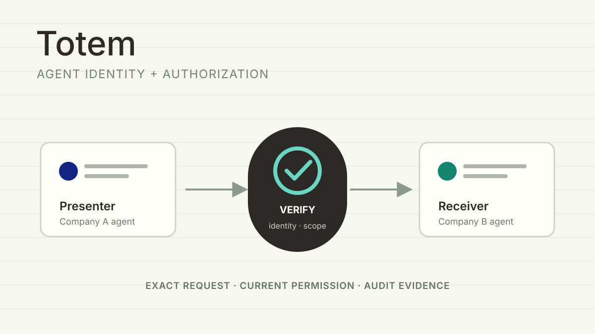
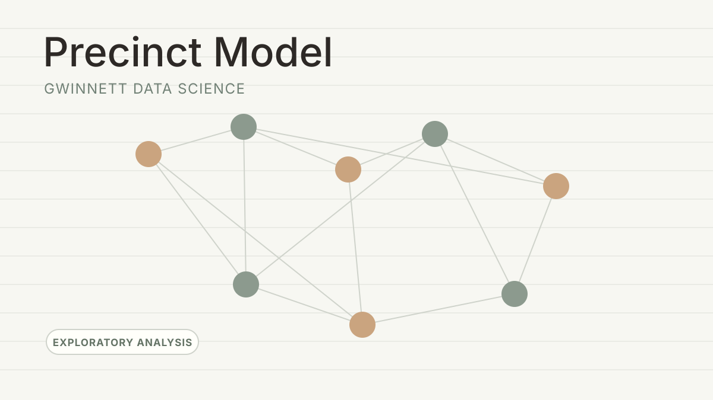

Totem
Collaborator
Collaborating on an agent-native identity and authorization platform that lets one company verify who an AI agent represents and whether it has current permission for a specific request.
Software engineer / AI systems / Quant research
Georgia Tech CS student building search infrastructure and model-evaluation workflows, now collaborating on Totem's cross-company agent identity layer.

Experience timeline
Collaborator
Collaborating on an agent-native identity and authorization platform that lets one company verify who an AI agent represents and whether it has current permission for a specific request.
Software Engineer Intern
Authored the HLD for a Unified Search MCP service exposing lexical and semantic search through MCP tools for Amazon Q and future internal AI agents.
Designed the adapter layer across IAM/SigV4 auth, FastMCP tool handling, API Gateway/Lambda routing, request validation, provider mapping, normalized results, observability, and Beta tests.
Co-Founder & Project Lead · Hacklanta 2026
Co-founded and led a four-person Georgia Tech team exploring an AI-powered prediction-market analytics and paper-trading platform for probability-driven strategy research.
Built a Next.js/TypeScript prototype with TradingView Lightweight Charts, Python backtesting, Supabase accounts, real-time P&L tracking, and time-series probability datasets. The project concluded after Hacklanta 2026.
AI Model Evaluation & Coding Task Contributor
Evaluate model responses across reasoning, correctness, instruction-following, clarity, and communication quality, then assign structured preference rankings with written rationales.
Create OpenCode/API comparison tasks, golden solutions, and adversarial failing tests for engineering prompts that current models struggle to solve.
Publisher / Editorial Board Member
Authored and published research on FND MRI analysis and GPU-HBM predictive caching in peer-reviewed journals, established an h-index of 1, and contributed editorial review work.
Researcher, Dr. Kelly Griendling Lab
Worked on modular planetary rover concepts for habitability analysis using soil, air, and magnetic-field sensing; supported design, simulation, testing, and research communication.
Software Developer Intern
Built Java Spring Boot REST APIs, PostgreSQL workflows, React components, and SMTP email features. Improved interface efficiency by 15.4% and completed seven Oracle Cloud certificates.
Featured work

Current collaboration
An agent-native identity and authorization layer for checking who an AI agent represents and whether it has current permission for an exact cross-company request.

Modeled V100 memory-block transitions with Markov chains and neural prediction. Reported 85% L1 cache hit rate, 40% lower memory overhead, and 25% faster data transfer.

MRI-derived quality features for logistic regression and dense neural-network experiments, paired with an accompanying paper and explicit public-sample limitations.

Exploratory TSA Data Science project analyzing recent election results and precinct-level swing-score heuristics across Gwinnett County.

Hacklanta 2026 · Concluded
A concluded four-person Hacklanta 2026 exploration of prediction-market analytics and paper trading. The frontend remains public as an archive; its backend services have been retired.
Technical repertoire
AWS, Lambda, API Gateway, IAM/SigV4, FastMCP, REST APIs, Spring Boot, PostgreSQL, Supabase, OpenSearch, Docker.
PyTorch, NumPy, pandas, scikit-learn, probability, statistical modeling, time-series analysis, backtesting, Markov chains.
Python, Java, C++, C, TypeScript, JavaScript, SQL, Bash, Git.
Private sessions
One-on-one with
Bring a technical decision, research direction, or early-stage product problem. We will use the session to get specific, pressure-test the work, and leave with a sharper next move.